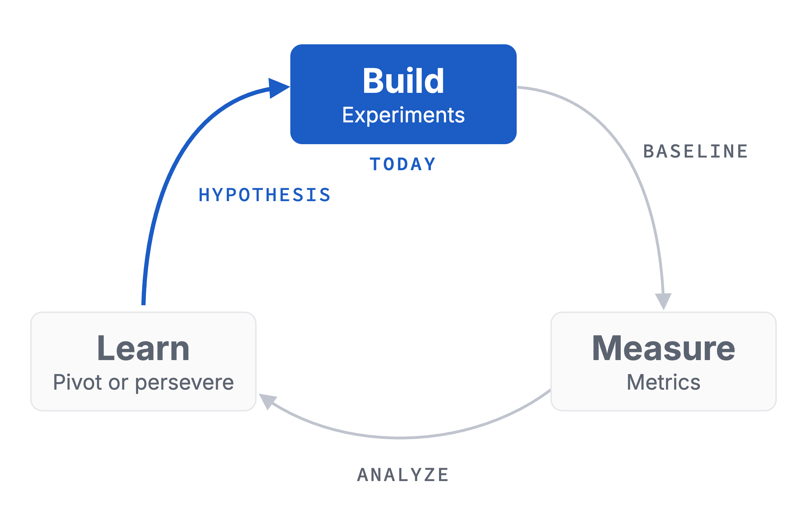
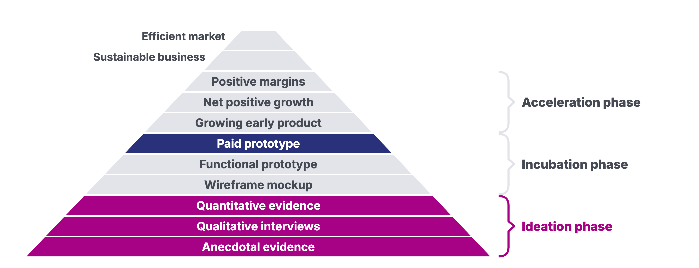
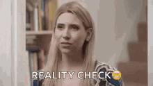
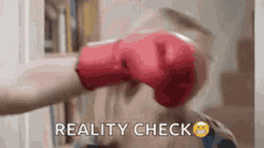
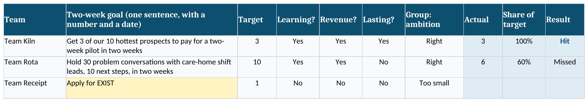

Module 00 · Ambitious Entrepreneurship
No-Bullshit Entrepreneurship
What kills startups, and what will this course demand from you?
Course path
- 00
- 01
- 02
- 03
- 04
- 05
- 06
- 07
- 08
- 09
- 10
- 11
- 12
Check-in · Slido or hands
How big could your startup get?
- A good side income
- A solid company of 50 people
- A unicorn
- The next Google
Chapter 1 of 6
Why now, why you
The companies founded now will shape the next 50 years, so why not yours?
The companies founded now will shape how we see the world for the next
50years
The best time to start in decades.
Maybe in 50 years.
Why now · every transition
At every transition, a newcomer beat the giants
Nobody saw the next one coming
Nobody knows where the puck is going. Whoever skates there first builds the next big thing.
It could be you
Why now · Dalio's big cycle, my read
Dalio sees a turn coming. I see an opening
Ray Dalio puts us late in a cycle of about 75 years, just before the breakdown
My read for founders
- A productivity crisis clears out slow competitors
- Free capital looks for productive outlets
- Climate, security and demography need new solutions
Why you
They weren't better prepared than you
Age and education when they started
19
Bill Gates
Harvard, left without a degree · Microsoft 197521
Steve Jobs
One semester at Reed College · Apple 197625
Larry Page & Sergey Brin
Stanford PhD students, never finished · Google 199828
Hasso Plattner
Engineer, left IBM with four colleagues · SAP 197230
Jensen Huang
Chip designer, master's from night classes · Nvidia 199330
Werner von Siemens
Artillery school, no university · Siemens 1847Yes, you can build it!
Yes, you can ship it!
Customers don't buy patents!
Customers can pay you!
The base rate
Most new businesses* don't reach year five
Germany, share still active by year founded
Still active after 1 year · founded 2019
72%
After 3 years · founded 2017
48%
After 5 years · founded 2015
37%
* Not all new businesses are startups.
A small idea costs you the same years as a big one. So aim for
the next Google
Aim big. Start narrow.
Facebook began at one campus.
A tier list of startup ideas
Aim for S. Stay out of the tarpit
Tarpit ideas look easy and die quietly
SMoonshots
The next GoogleIndustrial capabilities in space
AUnsexy plumbing
Compliance paperwork for small factoriesAI-native compliance infrastructure
BCrowded trades
Yet another AI note-taker
CWrapper zone
Chat with your filesCopilot for dog walkers
DTarpit ideas
Restaurant & event discoveryAn app to plan hangouts with friendsTrading tools for day traders
F
Fridge inventory appA social network for pet ownersInvesting your friends' money on Reddit tips
Now you · alone · 2 minutes
Where does your idea land?
!Your starting point
Place it on the tier list
No idea yet? Take a frustration you saw someone fight last month.
- Write your idea, problem or technology in one line
- Which tier? Be honest
- Write the one belief about customers it rests on
- Like: "Junior HR managers would pay to stop candidates ghosting them"
Output One line, one tier, one beliefMinutes 2
Reality check · the long game
Your first €1,000 sets the pace
Revenue and time on log scales. Half the pace now means half the pace later
Chapter 2 of 6
It has never been easy
Every tool made building easier, but finding what people pay for never got easier.
"Tackling problems that are interesting to solve rather than those that serve a market need"
42%no market need
The #1 reason.
Not cash. Not competitors.
Who is talking?
Driving lessons from someone who never drove?
You'll be asked
What matters
Who has the problem?
Who paid?
What did you learn this week?
Get a board of advisers. Partner with big companies. […] Get a patent strategy. […] And the product is like an afterthought.
Patents
Patents matter in biotech. In software they come last
How 1,332 young tech companies ranked patents as protection
Grants
A grant buys you time, not evidence
Vanity metrics
Count what customers did, not what you collected
Validated learning is the only progress early on
Collected
4,000 followers, 2 pitch awards, 1 patent filed, 40,000 page views
Learned
15 conversations, 3 next steps, 1 payment
"… validated learning is backed up by empirical data collected from real customers." Eric Ries
Technology push
Start from a problem, not from your technology
Now you · alone · 3 minutes
Sort the advice you got
!Keep or unlearn
Three pieces of advice, three questions
You keep only advice that makes you learn from customers.
- Write the three pieces of startup advice you heard most this year
- Note who gave each. Did they ever found a company?
- Ask of each: does it make me learn from customers, or collect something?
- Mark each one keep or unlearn
- Like: "File a patent first", a bank adviser who never founded. Unlearn
Output Three lines, each marked keep or unlearnMinutes 3
"Now it's easy"
Every new tool made building easier. None made startups easy
"It's getting so cheap to start a startup." Paul Graham, 2005
Rails
2005"a blog in 15 minutes"AWS
2006no servers to buyNode.js
2009"an easy way" to build serversNo-code
2020"build without engineers"AI
2025"vibe coding"
The skill never changed
Tech changes. The founder's job doesn't
Every wave needed people who turned it into something others pay for
1847telegraph
?
Nowyou
Before the internet
Startups happened before the internet, but they had a problem
Mistakes aren't a necessary evil. They aren't evil at all. They are an inevitable consequence of doing something new.
Book
Creativity, Inc.
Ed Catmull with Amy Wallace, 2014
Chapter 3 of 6
Speed matters
You beat the big ones by learning faster, with Build-Measure-Learn and the hierarchy of evidence.
Your startup is a loop. It runs
cash>0
while (cash > 0) {
learn();
}
Every week without learning burns runway.
Working with constraints
While BMW runs one loop, you can run twenty
No manpower, no money, no time. Also no inertia, no legacy, no politics
BMWpeople, money, time
1 iteration legacy · politics · sign-offs
Younone of that, none of the drag
1234567891011121314151617181920
The core of this course
Two ideas, two tools
Everything in the next twelve weeks builds on these four
1
Speed matters
You beat the big ones only by learning faster
2
Validated learning beats everything
Opinions are free. Evidence costs a conversation, a click, a payment


What the evidence says · 4 randomized trials
Founders who test like scientists kill bad ideas sooner
759startups in four randomized trials
+9.8points more ideas terminated
+€7kmore revenue per firm over 16 months, many earned none
Cornerstone · Build-Measure-Learn
Your idea is a hypothesis
Build the smallest test, measure, learn
The problem hypothesis
Write hypotheses a stranger could prove wrong
Who, problem, situation, workaround, cost
A solution in disguise
"People need an app that makes hiring easier."
A problem hypothesis
Junior HR managers struggle with candidates who ghost them after the interview. Today they chase by phone, which costs them [hours] a week.
Disciplined Entrepreneurship · 24 steps
24 steps feel safe. It's still one loop
Each step is Build-Measure-Learn. Steps 20 and 21 meet reality
1Market segmentation
2Select a beachhead market
3Build an end user profile
4TAM for the beachhead
5Persona for the beachhead
6Full life cycle use case
7High-level product specification
8Quantify the value proposition
9Identify your next 10 customers
10Define your core
11Chart your competitive position
12Determine the customer organisation
13Map how to acquire a paying customer
14TAM for follow-on markets
15Design a business model
16Set your pricing framework
17Calculate the unit economics
18Map the sales process
19Calculate the customer economics
20Identify key assumptions
21Test key assumptions
22Define the MVP
23Prove your beachhead with your MVP
24Develop a product plan
Reality check
Every plan feels safe until reality hits back


Everybody has a 24-step plan until reality punches them in the face.After Mike Tyson
Cornerstone · hierarchy of evidence
It's a signal until somebody pays
Hands up · 1 minute
What backs your idea today?
Rate the belief you wrote on the tier list
- My opinion
- An anecdote
- A conversation
- A payment
Speed matters:
Ship weekly
Every week, you can talk to at least
15relevant users
15 a week is 3 a day.
This week's full bar.
One step should not take more than
4hours
Now you · alone · 2 minutes
What's your fastest test on a real person?
!This week
Before you build anything
The smallest thing that reaches a real person by Friday.
- Who exactly? A name, not a segment
- What do you ask or show them?
- Which day do you do it?
- Like: "Call three HR managers from my old company on Thursday"
Output One test, one name, one dayMinutes 2
Chapter 4 of 6
How this course works
Thirteen weeks built for speed, ending with a team, a validated idea and first revenue.
Course path
Thirteen weeks from first leads to first euros
The best teams make more than €10,000 in revenue along the way
00Kickoffyour first sales leads
01Team & foundationsone shared problem space
02Finding ideasthe first names on your prospect list
03The problem spaceyour first prospects
04Validating problemsyour first testers and buyers
05The solution spaceMVP spec + deployed Weekend Build
06Prototyping with AIdeployed prototype + 10 non-friend reactions
07The kill decisionprovisional verdict
08Finding first usersfirst revenue from strangers
09Prototype to productmore revenue
10Product managementmore revenue
11Founder healthmore revenue
12Fundraising & demo dayverified revenue
How a week runs
Every module offers three blocks
Each block works on its own
About 90 minutes each · drawn to scale
Input session
Workshop
Case discussion
| Block | What happens |
|---|---|
| Input session | Check-in, recap, your read-out, new content, wrap-up |
| Workshop | You start the week's work on your own venture |
| Case discussion | A real founder's decision, prepared at home in 4 to 6 hours |
From Module 01 on · every week
Show us where you're at in 3 minutes or less!
Start with your target against your actual
Facts
Statistics or research- What do they say?
- What does it mean?
- Where are they from?
Numbers
Usage or surveys- How were they reported?
- How did they change?
- Why is it relevant?
Quotes
Interviews or testimonials- What did they say?
- Why did they say it?
- What could this mean?
Images
Screenshots or users- What happened?
- What changed?
- Why is it relevant?
What did you do?What did you learn?How can we help?
Every week
Every week, your target against your actual
The trap
Busy feels like progress. Mostly it isn't
Five full days. Which one would a customer notice?
The group
Three to seven teams. Every two weeks. One goal each
Informal, short and candid. No slides, numbers first
The two-week cycle
Set it, test it, do it, then answer for it
The goal test
Test every goal before you work on it
Two no's, and the team rewrites it before the meeting ends
Learning?Will we know something about customers that we don't know today?
Revenue?Does it bring a paying customer closer?
Lasting?Does it build a business that can carry itself?
Weak
"Apply for EXIST"
Good
"3 of our 10 hottest prospects pay for a pilot in two weeks"
The candid rule
Hit every goal? Then they were too small
Average share of target over several cycles, to scale
Average share of target · 0 to 100%
Too big, or off focus
Stretching
Sweet spot
Good
Sandbagging
0%34%60%70%80%
"… when you are your own boss, you are screwing yourself." Michael Seibel on sandbagging
Y Combinator does it
YC asks every batch the same question
Group office hours every two weeks, 6 to 10 companies
The tool
Run the group from one spreadsheet
Left half when you set the goal, right half two weeks later

The sheet flags a goal that fails the test, and the scoreboard says when to raise the bar
The workshop ladder
Your work climbs five rungs toward real users
Your results are for users to interact with
How you're graded
Evidence and decisions weigh as much as revenue
You're not graded on sticking to your idea
The rubric · drawn to scale
Evidence quality30%
Decision discipline30%
Verified traction30%
Communication10%
A well-argued kill with a documented evidence pack can earn an A.
A very good result is a growing startup
Work on what you control
Things you can control
- 😍 Talk to 15 users each week
- 📈 Present your progress every week and ask for help
- 🎁 Offer critical feedback and questions
- 🔬 Be an expert in your problem space
- 🔄 Pivot when you hit a brick wall
Things you can't totally control
- 🖥️ Steady growth on your landing page
- 📇 A lead list of potential users
- 🤑 Paying customers
How we work together
Be present or be elsewhere
1
Together we grow: coachability
We give candid and productive feedback. We listen and seek to understand.
2
We act as we say: accountability
We stick to our word where it's in our hands. We learn from failures where it's not.
3
Give first, dream first: bias to action
We prefer building and experimenting over understanding every aspect.
Dos and don'ts in this seminar
Pivoting is fine. A knowingly bad idea isn't
Totally fine
- 🦄 Building wild ideas
- 🤕 Regrouping
- 🥴 Pivoting
- 😵💫 Failing
Not OK in here
- 👻 Sticking with a knowingly bad idea
- ⏰ Being late
- 🛌 Missing class
- 🤐 Staying silent when you don't understand
What you leave with
A team, a validated idea and first revenue
The best teams make more than €10,000 along the way
Team2 to 4 people who commit to each other
Ideavalidated: somebody paid for it
€first revenue in the bank
What we are working towards · the Sequoia pitch
Every phase earns part of your pitch
1Company purposeCover
7Business modelSolution
2ProblemProblem
8TeamCover
3SolutionSolution
9Financials
4Why now?Problem
10Vision
5Market potentialCover
11RoadmapCover
6CompetitionProblem
Teams form in Module 01
Find teammates this week, or we match you
4a
Find teammates
- Say your problem space in one sentence
- Talk to the people who share it, this week
4b
We match you
- Nobody found by Module 01?
- We match you on your problem space
Chapter 5 of 6
Wrap-up and check-out
What you take home today, and the fifteen conversations that start this week.
Recap · cornerstone
One full turn this week, not this semester
You started today. Close it by Module 01
Recap · cornerstone
Climb from opinions to a payment
Reflection 1 of 3 · the content
What could you apply?
🛠️
What could you apply?
🤕
What gave you a hard time?
Reflection 2 of 3 · the process
Man vs. machine
🤖
Where did AI actually help you?
🧠
Where was your genius needed?
🕴️
What are your best hacks to share?
Reflection 3 of 3 · the results
Rose, thorn, bud
🌹
What was the breakthrough today?
🌵
What was the hardest part today?
🌱
What is an idea/feature you didn't have time to finish, but want to explore later?
Write 3 problem hypotheses and hold 15 problem conversations with named people, learning what the problem costs each of them today, and come back with 3 people who agreed to a next step.
15conversations
The learning floor is 3 hypotheses and 5 conversations with 1 next step.
Log your kill line before your first conversation.
Homework · how to
Find your people where they already are
Fifteen conversations means three a day. Start today
1
People you see every day
Colleagues, clients, your lab. What do they complain about, and whom do they know?
2
Be a fly on the wall
Sit in on a shift or a support queue. Note what people curse at
3
Read bad reviews
1 to 3 stars on Trustpilot, G2 or Capterra. Repeated complaints are problems
4
AI deep research
Ask where your "who" complains online
Homework · what good looks like
Dig deeper, or move on
A narrow, deep well: a few people want it fixed badly. A made-up example
| Dig deeper | Move on | |
|---|---|---|
| Who | Lab managers in biotech start-ups | "Researchers" |
| Raised | 4 of 10, before I named it | Only once I named it |
| Cost | 4 hours a week, 2 built Excel trackers | "Annoying, but we live with it" |
| How many | 6 of 10, in 4 labs | Me and my flatmate |
References · 1 of 5
Sources in this deck
- Aulet, B. (2013). Disciplined entrepreneurship: 24 steps to a successful startup. Wiley.
- Caldwell, D., & Seibel, M. (2024, July 19). Tarpit ideas: The sequel [Video]. YC Startup Library.
- Camuffo, A., Cordova, A., Gambardella, A., & Spina, C. (2020). A scientific approach to entrepreneurial decision making. Management Science, 66(2), 564–586.
- Camuffo, A., Gambardella, A., Messinese, D., Novelli, E., Paolucci, E., & Spina, C. (2024). A scientific approach to entrepreneurial decision-making: Large-scale replication and extension. Strategic Management Journal, 45(6), 1209–1237.
- Cantamessa, M., Gatteschi, V., Perboli, G., & Rosano, M. (2018). Startups' roads to failure. Sustainability, 10(7), 2346.
- Catmull, E., & Wallace, A. (2014). Creativity, Inc. Random House.
- CB Insights. (2019). The top 20 reasons startups fail.
- CB Insights. (2026, March 5). The top 9 reasons startups fail.
References · 2 of 5
Sources in this deck
- Dalio, R. (2025). How countries go broke: The big cycle. Avid Reader Press.
- Dalio, R. (2026, March 14). I've studied 500 years of history and fear we're entering the most dangerous phase of the 'Big Cycle'. Fortune.
- Eurostat. (2024). Business demography by size class and NACE Rev. 2 activity (bd_9bd_sz_cl_r2) [Data set].
- Federal Reserve Bank of St. Louis. NASDAQ Composite Index (NASDAQCOM) [Data set]. FRED.
- Graham, P. (2005, November). The venture capital squeeze. paulgraham.com/vcsqueeze.html.
- Graham, P. (2012, November). How to get startup ideas. paulgraham.com/startupideas.html.
- Gretzky, W., & Reilly, R. (1990). Gretzky: An autobiography. HarperCollins.
- Gruber, J. (2005, July 8). Rails movie. Daring Fireball.
References · 3 of 5
Sources in this deck
- Karpathy, A. (2025, February 2). Vibe coding [Post]. X.
- Popova, M. (2014, May 2). Pixar cofounder Ed Catmull on failure. The Marginalian.
- Quote Investigator. (2021, August 25). Everybody has plans until they get hit.
- Ries, E. (2011). The lean startup. Crown Business.
- Sequoia Capital. (2019, March 15). Writing a business plan.
- U.S. Bureau of Labor Statistics. Business employment dynamics: Survival of private sector establishments by opening year.
- Wikipedia. (2026). Articles on Gates, Jobs, Page, Brin, Plattner, Huang and Werner von Siemens, retrieved 2026-10-19.
References · 4 of 5
Sources in this deck
- BMWi (2021). EXIST-Gründungsstipendium [Brochure]. Federal Ministry for Economic Affairs and Energy.
- Caldwell, D., & Seibel, M. (2024, August 6). The problem with startup "experts" [Video]. Y Combinator.
- Farre-Mensa, J., Hegde, D., & Ljungqvist, A. (2020). What is a patent worth? Evidence from the U.S. patent "lottery". Journal of Finance, 75(2).
- Friedman, J. (2020). How to get startup ideas [Video]. YC Startup School.
- Graham, P. (2006, March). Are software patents evil? paulgraham.com.
- Graham, S., Merges, R., Samuelson, P., & Sichelman, T. (2009). High technology entrepreneurs and the patent system. Berkeley Technology Law Journal, 24(4).
- Howell, S. T. (2017). Financing innovation: Evidence from R&D grants. American Economic Review, 107(4).
References · 5 of 5
Sources in this deck
- Alströmer, G. (2023, March 2). Lessons from working with 600+ YC startups [Podcast]. Lenny's Podcast.
- Bhat, D. (n.d.). Setting KPIs and goals [Video]. YC Startup School.
- Caldwell, D., & Seibel, M. (n.d.). Setting smarter goals [Video]. Y Combinator.
- Chatterji, A., Delecourt, S., Hasan, S., & Koning, R. (2019). When does advice impact startup performance? Strategic Management Journal, 40(3).
- Google (n.d.). Set goals with OKRs. re:Work.
- Y Combinator (n.d.). About Y Combinator.
See you in Module 01, with names and numbers!
Module 00 · Workshop · 90 minutes
Workshop: Autopsy your startup before it dies
Find what could kill your idea, write hypotheses you can lose, and reach real people today.
What kills startups, and what will this course demand from you?
Workshop · step 1 of 3
Autopsy your own startup
1STEP 1 · 25 MIN
AUTOPSY YOUR OWN STARTUP
Find the customer assumption that kills your idea
- Your starting point in one line
- One year on, your startup is dead. Why?
- Each cause becomes "We assumed …"
- Circle the riskiest untested one
- Pairs: "How do you know?"
Output Riskiest untested assumption, in the Weekly ReflectionMinutes 25
Workshop · step 2 of 3
Write hypotheses you can lose
2STEP 2 · 25 MIN
WRITE HYPOTHESES YOU CAN LOSE
Hypotheses a stranger could prove wrong this week
- 3 hypotheses: who, problem, situation, workaround, cost
- Rate the evidence: opinion, anecdote, conversation, payment
- Rank them, riskiest first, start AI deep research
- Kill line logged before any contact
Output 3 ranked hypotheses, their evidence, a kill lineMinutes 25
Workshop · step 3 of 3
Reach real people, then commit
3STEP 3 · 40 MIN
REACH REAL PEOPLE, THEN COMMIT
Leave with the week already moving
- 10 min: pick named people from your research
- 15 min: 5 messages to named people, or one call
- Don't name your problem, do NOT pitch
- 10 min: floor or full bar, midweek pace
- 5 min: your problem space in one sentence, find teammates
Output Messages sent, target, pace, possible teammatesMinutes 40
No idea yet? Run the autopsy on a frustration you watched someone fight last month.
1real frustration
Write 3 problem hypotheses and hold 15 problem conversations with named people, learning what the problem costs each of them today, and come back with 3 people who agreed to a next step.
15conversations
The learning floor is 3 hypotheses and 5 conversations with 1 next step.
Log your kill line before your first conversation.
See you in Module 01, with names and numbers!